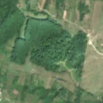
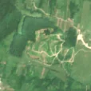

8,3 ha de pădure schimbată lângă Moreni
Între vara lui 2025 și 29 aprilie 2026, pe aproximativ 8,3 ha de pădure din comuna Berzunți, lângă Moreni, județul Bacău, imaginile Sentinel-2 arată că vegetația a dispărut sau s-a schimbat puternic. În registrul public există o autorizație de tăiere pentru acest loc.
Autorizația de tăiere
probabil cu autorizație
Am găsit o autorizație de tăiere pentru locul ăsta, dar registrul nu ne lasă să confirmăm că acoperă exact tăierea pe care o vedem.
Ce se vede în poze: În poza detaliată și în «înainte», zona marcată era o pădure deasă, iar în «după» pădurea din jur a rămas verde, dar în zona marcată se văd poteci și petice de pământ gol. Asta arată că arborii au fost tăiați și scoși, cu drumuri de tractor prin pădure.


Înainte și după: Copernicus Sentinel-2, 10 m pe pixel, conturul zonei cu portocaliu. Poza detaliată (Esri World Imagery) e de acum 1–4 ani: arată ce era acolo înainte, nu tăierea.
Pe scurt
- Identificator
- 20260429_46419_26662
- Locul
- Moreni, comuna Berzunți, județul Bacău (SIRUTA 21418)
- Coordonate (centru)
- 46.41869, 26.66180 · Google Maps · OpenStreetMap
- Suprafața
- 8,3 ha (din pixeli de 10 m; ± câțiva pixeli pe margine)
- Pădurea întreagă
- în vara lui 2025 (de atunci, nori sau iarnă)
- Prima imagine cu schimbarea
- 29 aprilie 2026
- Imagini în care se vede schimbarea
- 12
- Cât de sigur e semnalul din satelit
- medie
- Autorizația cea mai apropiată
- APV 2600006000580 · Ocolul Silvic Livezi, valabilă 22 aprilie 2026 – 21 iunie 2026, la 17 m de zonă
- Terenul
- pădure de stat, după amenajamentul silvic publicat
- Pădure pierdută în jur, alți ani
- 2020, 2025 (Hansen)
- Garda Forestieră
- Suceava
Dacă vrei să verifici sau să sesizezi
- Pădurile din județul Bacău sunt în grija Gărzii Forestiere Suceava, care controlează tăierile și dă amenzile.
- Autorizația găsită în zonă e emisă de Ocolul Silvic Livezi.
- Formularul Gărzii Forestiere Naționale primește sesizări și fără nume. Trimite linkul acestei pagini, coordonatele și pozele. Dacă tăierea e în desfășurare, sună la 112.
- Autorizațiile și transporturile de lemn se pot căuta în Inspectorul Pădurii.
Pagina arată ce se vede din satelit și ce scrie în registrul public; nu e o dovadă în sine.
Cum citezi zona
Linkul acestei pagini nu se schimbă. Dacă zona iese vreodată de pe hartă, pagina rămâne, cu data și cu ce știam despre ea.
Pădurea RO, zona 20260429_46419_26662: 8,3 ha, Moreni, comuna Berzunți, județul Bacău; schimbare văzută din satelit între vara lui 2025 și 29 aprilie 2026. https://iliemihai.github.io/padurea-ro/zona/20260429_46419_26662/ (consultat la [data]). Date: CC BY 4.0.
Datele zonei: GeoJSON · toate zonele: date deschise · licența CC BY 4.0.
Istoricul zonei pe hartă
Starea se poate schimba când registrul publică o autorizație sau când analistul vede poze mai bune. O ținem aici, ca un link citat să arate și ce spuneam atunci.
Pe hartă cel târziu din 5 noiembrie 2026.
- 5 noiembrie 2026 – azi · probabil cu autorizație
Detalii tehnice, pentru verificare
De ce acest nivel de încredere:
- văzută schimbată în 12 imagini diferite
- peste 3 ha
- ultima dată am văzut-o intactă în vara lui 2025 (de atunci, nori sau zăpadă)
- AI-ul vede pădure dispărută
Ce a văzut analistul cu context: În «după» apare o rețea ramificată de drumuri de colectare și suprafețe deschise de culoare deschisă, cu margini destul de clare, în interiorul unui masiv care rămâne verde în imaginea largă; nu e vorba de sezon, foc sau câmp. Datele susțin tăierea: acoperire cu arbori 99%, coronament 94% în 2000, un APV al Ocolului Silvic Livezi la 17 m cu perioadă valabilă (suprapunere 0%, verdict «probabil»). Rămân petice verzi, deci nu se exclude o rărire puternică.
- Placa Sentinel-2
- 35TMM
- NDVI de referință
- 0.89
- NBR de referință
- 0.61
- Scăderea în pădurea din jur
- 0.09
- Persistență
- 1.0
- NDVI / NBR după
- 0.506 / 0.241
- Analistul de zi (model)
- taiere · 0.9 · claude-haiku-5-5
- Analistul cu context (model)
- taiere_rasa · 0.62
Cum se calculează fiecare: metodologia.
Pune harta zonei într-un articol
Copiază codul în articol (merge în majoritatea site-urilor de știri). Sau pune doar linkul: WhatsApp, Facebook și X arată singure poza zonei.